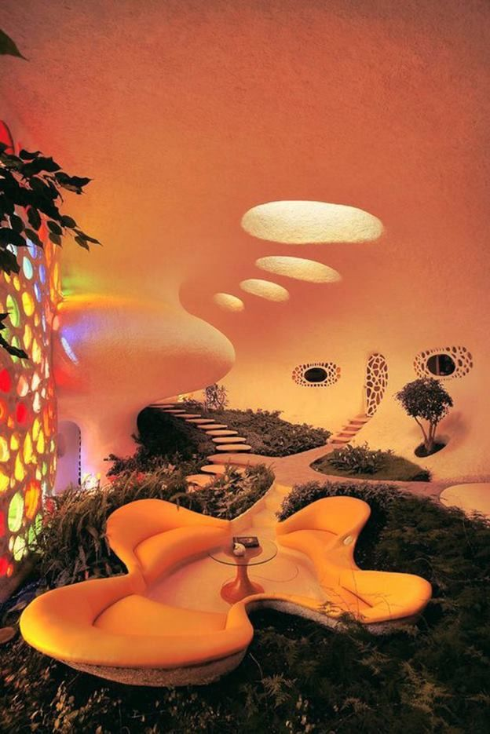
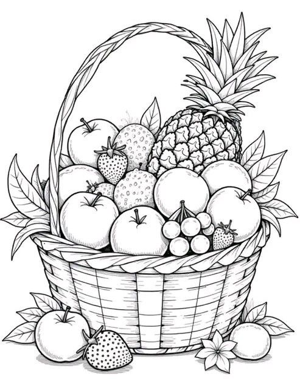
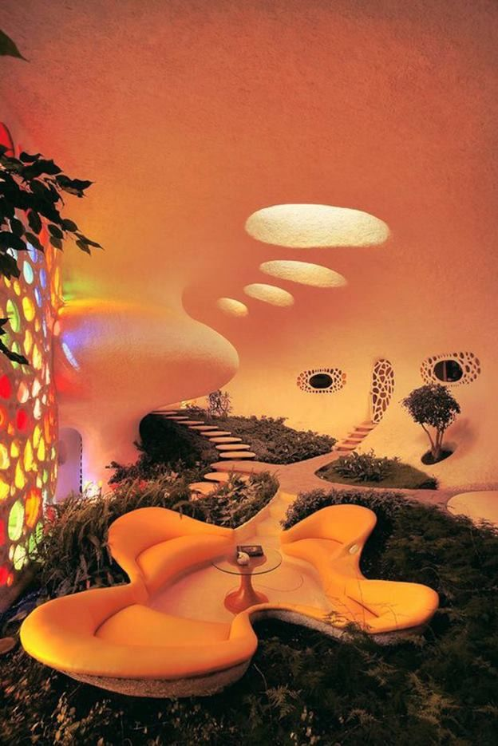
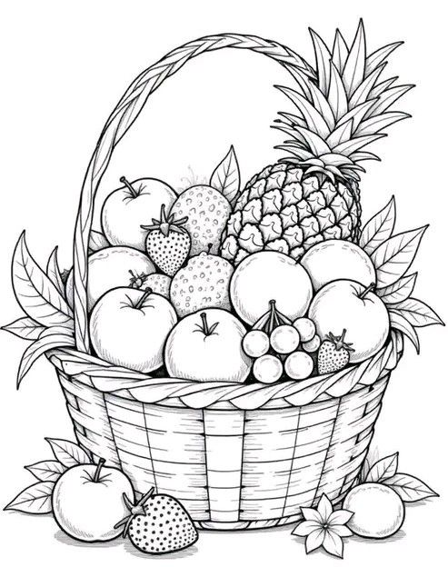

Recent advances in language and vision have demonstrated that scaling up model capacity consistently improves performance across diverse tasks. In 3D visual geometry reconstruction, large-scale training has likewise proven effective for learning versatile representations. However, further scaling of 3D models is challenging due to the complexity of geometric supervision and the diversity of 3D data. Inspired by the success of Mixture-of-Experts (MoE) in enabling task specialization while keeping computation efficient, we present MoRE, a dense 3D visual foundation model that integrates MoE to dynamically allocate features for task-specific experts. To address the inherent noise in real-world training data, we introduce a confidence-based depth refinement module, thereby enhancing the stability and accuracy of geometric estimations. Furthermore, our method integrates dense semantic features with globally aligned 3D backbone features to achieve high-fidelity surface normal estimation. MoRE is trained with tailored loss functions to improve robustness across diverse inputs and multi-task outputs. Extensive experiments demonstrate that MoRE achieves highly accurate 3D reconstruction, sets new state-of-the-art performance across multiple benchmarks, and enables effective downstream applications without increasing computational cost.
● Zoom - Scroll mouse wheel or pinch
● Rotate - Left drag
● Pan - Right drag
 





@article{MoRE2025,
title={MoRE: 3D Visual Geometry Reconstruction Meets Mixture-of-Experts},
author={Jingnan Gao and Zhe Wang and Xianze Fang and Xingyu Ren and Zhuo Chen and Shengqi Liu and Yuhao Cheng and Jiangjing Lyu and Xiaokang Yang and Yichao Yan},
journal={arXiv preprint arXiv:2510.27234},
year={2025}
}